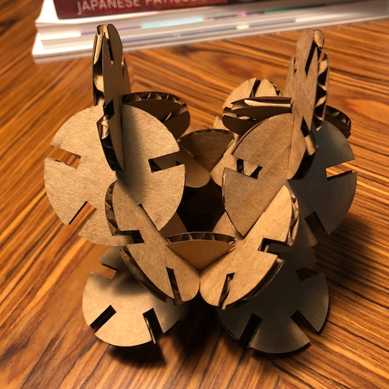
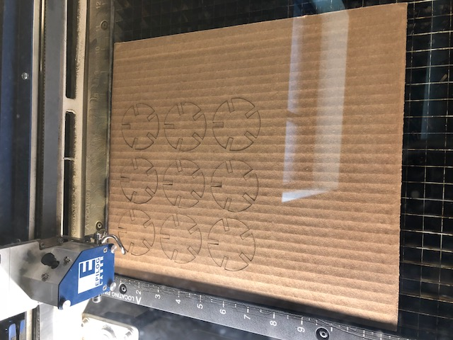
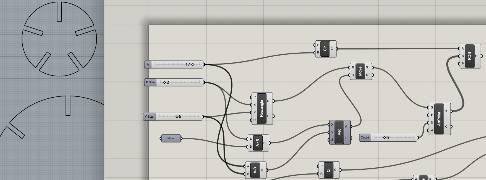
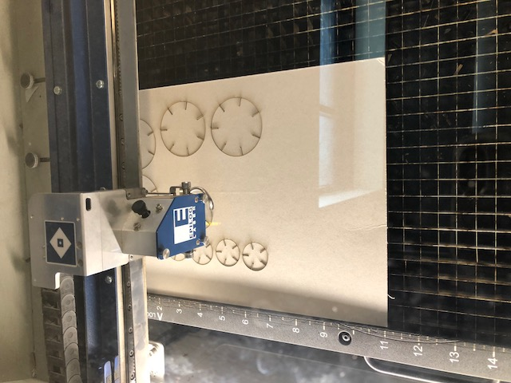
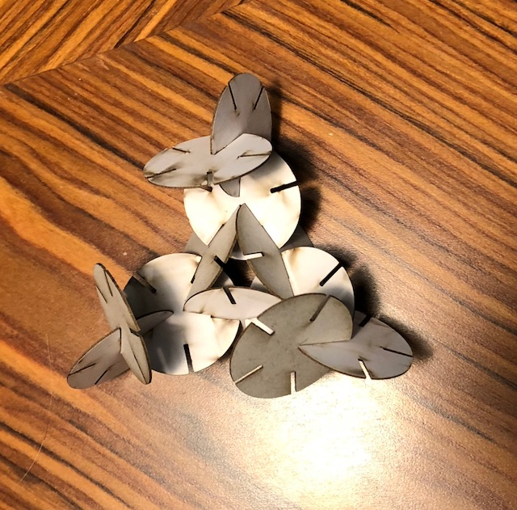
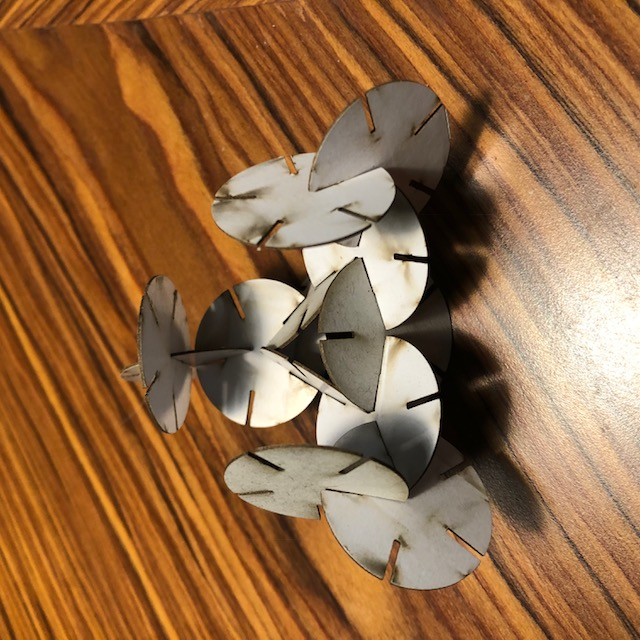

1. I identified a new shape to explore, which was a no brainer since you demonstrated a circle in class.

2. Tried to add other shapes, but ran into problems assigning an array to a rectangle. Instead designed some different sized circles
3. I used Grasshopper to apply parameters and arrays. Some of this even sounded familiar from Intro to Programming p5.js.

4. I test cut on the laser cutter using 25% speed and 100% power, making sure my measurements worked.
5. The first test fit!! I then used the number slide to adjust the with of the tab cutouts for my thinner material and repeated the process with the pasteboard.

The final pieces


For fun, how I applied similar reasoning in p5.js to create a mini alien movie